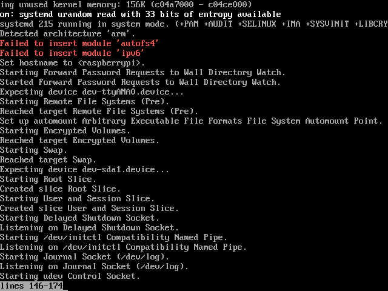

We need following components to build Embedded Linux software for Raspberry Pi using buildroot.
wget https://github.com/dhruvvyas90/qemu-rpi-kernel/raw/master/tools/build-kernel-qemucat build-kernel-qemu#!/bin/bash # # Build ARM kernel 4.1.7 for QEMU Raspberry Pi Emulation # ####################################################### TOOLCHAIN=arm-linux-gnueabihf sudo apt-get update && sudo apt-get install git libncurses5-dev gcc-arm-linux-gnueabihf git clone https://github.com/raspberrypi/linux.git cd linux # checking out 4.1.7+ branch - change it if you want to change kernel version # for kernel specific hash, have a looks at : https://github.com/raspberrypi/linux/commits/rpi-4.1.y # git checkout 77798915750db46f10bb449e1625d6368ea42e25 make ARCH=arm versatile_defconfig cat >> .config << EOF CONFIG_CROSS_COMPILE="$TOOLCHAIN" CONFIG_CPU_V6=y CONFIG_ARM_ERRATA_411920=y CONFIG_ARM_ERRATA_364296=y CONFIG_AEABI=y CONFIG_OABI_COMPAT=y CONFIG_PCI=y CONFIG_SCSI=y CONFIG_SCSI_SYM53C8XX_2=y CONFIG_BLK_DEV_SD=y CONFIG_BLK_DEV_SR=y CONFIG_DEVTMPFS=y CONFIG_DEVTMPFS_MOUNT=y CONFIG_TMPFS=y CONFIG_INPUT_EVDEV=y CONFIG_EXT3_FS=y CONFIG_EXT4_FS=y CONFIG_VFAT_FS=y CONFIG_NLS_CODEPAGE_437=y CONFIG_NLS_ISO8859_1=y CONFIG_FONT_8x16=y CONFIG_LOGO=y CONFIG_VFP=y CONFIG_CGROUPS=y EOF make -j 4 -k ARCH=arm CROSS_COMPILE=${TOOLCHAIN}- menuconfig make -j 4 -k ARCH=arm CROSS_COMPILE=${TOOLCHAIN}- bzImage cd .. cp linux/arch/arm/boot/zImage kernel-qemuwget https://github.com/dhruvvyas90/qemu-rpi-kernel/raw/master/tools/linux-arm.patchcat linux-arm.patchdiff --git a/arch/arm/mach-versatile/Kconfig b/arch/arm/mach-versatile/Kconfig index 1dba368..82fa543 100644 --- a/arch/arm/mach-versatile/Kconfig +++ b/arch/arm/mach-versatile/Kconfig @@ -4,7 +4,6 @@ menu "Versatile platform type" config ARCH_VERSATILE_PB bool "Support Versatile Platform Baseboard for ARM926EJ-S" default y - select CPU_ARM926T select MIGHT_HAVE_PCI help Include support for the ARM(R) Versatile Platform Baseboard @@ -12,7 +11,6 @@ config ARCH_VERSATILE_PB config MACH_VERSATILE_AB bool "Support Versatile Application Baseboard for ARM926EJ-S" - select CPU_ARM926T help Include support for the ARM(R) Versatile Application Baseboard for the ARM926EJ-S. diff --git a/arch/arm/mm/Kconfig b/arch/arm/mm/Kconfig index bb263d8..1e6ce77 100644 --- a/arch/arm/mm/Kconfig +++ b/arch/arm/mm/Kconfig @@ -71,7 +71,7 @@ config CPU_ARM9TDMI # ARM920T config CPU_ARM920T - bool "Support ARM920T processor" if (ARCH_MULTI_V4T && ARCH_INTEGRATOR) + bool "Support ARM920T processor" if ARCH_INTEGRATOR || ARCH_VERSATILE_PB || ARCH_VERSATILE_AB select CPU_32v4T select CPU_ABRT_EV4T select CPU_CACHE_V4WT @@ -89,7 +89,7 @@ config CPU_ARM920T # ARM922T config CPU_ARM922T - bool "Support ARM922T processor" if (ARCH_MULTI_V4T && ARCH_INTEGRATOR) + bool "Support ARM922T processor" if ARCH_INTEGRATOR || ARCH_VERSATILE_PB || ARCH_VERSATILE_AB select CPU_32v4T select CPU_ABRT_EV4T select CPU_CACHE_V4WT @@ -127,7 +127,7 @@ config CPU_ARM925T # ARM926T config CPU_ARM926T - bool "Support ARM926T processor" if (!ARCH_MULTIPLATFORM || ARCH_MULTI_V5) && (ARCH_INTEGRATOR || MACH_REALVIEW_EB) + bool "Support ARM926T processor" if ARCH_INTEGRATOR || MACH_REALVIEW_EB || ARCH_VERSATILE_PB || ARCH_VERSATILE_AB select CPU_32v5 select CPU_ABRT_EV5TJ select CPU_CACHE_VIVT @@ -135,6 +135,7 @@ config CPU_ARM926T select CPU_CP15_MMU select CPU_PABRT_LEGACY select CPU_TLB_V4WBI if MMU + depends on !CPU_V6 && !CPU_V7 help This is a variant of the ARM920. It has slightly different instruction sequences for cache and TLB operations. Curiously, @@ -358,7 +359,7 @@ config CPU_PJ4B # ARMv6 config CPU_V6 - bool "Support ARM V6 processor" if (!ARCH_MULTIPLATFORM || ARCH_MULTI_V6) && (ARCH_INTEGRATOR || MACH_REALVIEW_EB || MACH_REALVIEW_PBX || MACH_BCM2708) + bool "Support ARM V6 processor" if ARCH_INTEGRATOR || MACH_REALVIEW_EB || MACH_REALVIEW_PBX || MACH_BCM2708 || ARCH_VERSATILE_PB || ARCH_VERSATILE_AB select CPU_32v6 select CPU_ABRT_EV6 select CPU_CACHE_V6 diff --git a/drivers/mmc/host/Kconfig b/drivers/mmc/host/Kconfig index 1af139a..fd51e26 100644 --- a/drivers/mmc/host/Kconfig +++ b/drivers/mmc/host/Kconfig @@ -6,7 +6,7 @@ comment "MMC/SD/SDIO Host Controller Drivers" config MMC_BCM2835 tristate "MMC support on BCM2835" - depends on MACH_BCM2708 || MACH_BCM2709 || ARCH_BCM2835 + depends on MACH_BCM2708 || MACH_BCM2709 || ARCH_BCM2835 || ARCH_VERSATILE_PB || ARCH_VERSATILE_AB help This selects the MMC Interface on BCM2835.
Kernel panic - not syncing: Attempted to kill init! exitcode=0x00000004
make ARCH=arm menuconfig
CONFIG_ARM_THUMB=y
CONFIG_AEABI=y
or
make menuconfig
System Type->
[*] Support Thumb user binaries
Kernel Features --->
[*] Use the ARM EABI to compile the kernel
[*] Allow old ABI binaries to run with this kernel (EXPERIMENTAL)
raspberrypi firmware
#/usr/lib/arm-linux-gnueabihf/libarmmem.so
Emulate Rapberry Pi 2 in QEMUfdisk -l 2016-08-02-raspbian-jessie.imgDisk 2016-08-02-raspbian-jessie.img: 3.8 GiB, 4019191808 bytes, 7849984 sectors Units: sectors of 1 * 512 = 512 bytes Sector size (logical/physical): 512 bytes / 512 bytes I/O size (minimum/optimal): 512 bytes / 512 bytes Disklabel type: dos Disk identifier: 0x14c20151 所用裝置 可開機 Start 結束 磁區 Size Id 類型 2016-08-02-raspbian-jessie.img1 8192 137215 129024 63M c W95 FAT32 2016-08-02-raspbian-jessie.img2 137216 7849983 7712768 3.7G 83 Linuxsudo mkdir /media/sdb1 /media/sdb2sudo mount -o loop,offset=`expr 137216 '*' 512` 2016-08-02-raspbian-jessie.img /media/sdb2sudo nano /etc/ld.so.preload#/usr/lib/arm-linux-gnueabihf/libarmmem.sosyncsudo umount /media/sdb2
Replace /dev/mmcblk0p1 to /dev/sda1 and /dev/mmcblk0p2 to /dev/sda2
fdisk -l 2016-08-02-raspbian-jessie.imgDisk 2016-08-02-raspbian-jessie.img: 3.8 GiB, 4019191808 bytes, 7849984 sectors Units: sectors of 1 * 512 = 512 bytes Sector size (logical/physical): 512 bytes / 512 bytes I/O size (minimum/optimal): 512 bytes / 512 bytes Disklabel type: dos Disk identifier: 0x14c20151 所用裝置 可開機 Start 結束 磁區 Size Id 類型 2016-08-02-raspbian-jessie.img1 8192 137215 129024 63M c W95 FAT32 2016-08-02-raspbian-jessie.img2 137216 7849983 7712768 3.7G 83 Linuxsudo mkdir /media/sdb1 /media/sdb2sudo mount -o loop,offset=`expr 137216 '*' 512` 2016-08-02-raspbian-jessie.img /media/sdb2sudo nano /media/sdb2/etc/fstabproc /proc proc defaults 0 0 #/dev/mmcblk0p1 /boot vfat defaults 0 2 #/dev/mmcblk0p2 / ext4 defaults,noatime 0 1 /dev/sda1 /boot vfat defaults 0 2 /dev/sda2 / ext4 defaults,noatime 0 1syncsudo umount /media/sdb2
journalctl -xb
ls -l /lib/modulescd /lib/modulesmv 4.4.16-v7+ 4.4.16+init 6journalctl -xbmodversions ARMv7 should be ARMv6 p2v8
Compile ARMv7 kernel for QEMU system
TOOLCHAIN=arm-linux-gnueabihfmake ARCH=arm versatile_defconfigcat >> .config << EOF CONFIG_CROSS_COMPILE="$TOOLCHAIN" # # Processor Type # CONFIG_CPU_V7=y CONFIG_ARM_ERRATA_411920=y CONFIG_ARM_ERRATA_364296=y CONFIG_AEABI=y CONFIG_OABI_COMPAT=y CONFIG_PCI=y CONFIG_SCSI=y CONFIG_SCSI_SYM53C8XX_2=y CONFIG_BLK_DEV_SD=y CONFIG_BLK_DEV_SR=y CONFIG_DEVTMPFS=y CONFIG_DEVTMPFS_MOUNT=y CONFIG_TMPFS=y CONFIG_INPUT_EVDEV=y CONFIG_EXT3_FS=y CONFIG_EXT4_FS=y CONFIG_VFAT_FS=y CONFIG_NLS_CODEPAGE_437=y CONFIG_NLS_ISO8859_1=y CONFIG_FONT_8x16=y CONFIG_LOGO=y CONFIG_VFP=y CONFIG_CGROUPS=y EOFmake -j 4 -k ARCH=arm CROSS_COMPILE=${TOOLCHAIN}- menuconfigmake -j 4 -k ARCH=arm CROSS_COMPILE=${TOOLCHAIN}- bzImageemacs arch/arm/mm/Kconfig# L387 --- bool "Support ARM V7 processor" if (!ARCH_MULTIPLATFORM || ARCH_MULTI_V7) && (ARCH_INTEGRATOR || MACH_REALVIEW_EB || MACH_REALVIEW_PBX) +++ bool "Support ARM V7 processor" if ARCH_INTEGRATOR || MACH_REALVIEW_EB || MACH_REALVIEW_PBX || MACH_BCM2709 || ARCH_VERSATILE_PB || ARCH_VERSATILE_ABmake -j 4 -k ARCH=arm CROSS_COMPILE=${TOOLCHAIN}- menuconfigmake -j 4 -k ARCH=arm CROSS_COMPILE=${TOOLCHAIN}- bzImageKernel: arch/arm/boot/zImage is readycd ..cp linux-rpi-4.4.16/arch/arm/boot/zImage zImage-4.4.16-v7+scp zImage-4.4.16-v7+ cssu@192.168.180.3:/src3/Xvisor/hsu/KVM/raspbian-img/qemu-boot
On Host
cd /src3/Xvisor/hsu/KVM/raspbian-img/qemu-bootcat zImage-4.4.16-v7+ bcm2709-rpi-2-b.dtb > kernel-qemu-4.4.16cd ..cat Rpi2-qemu-2016-08-02.sh#! /bin/bash qemu-system-arm -M versatilepb -cpu arm1136-r2 -m 256M \ -kernel qemu-boot/kernel-qemu-4.4.16 \ -append "rw earlyprintk loglevel=8 dwc_otg.lpm_enable=0 console=ttyAMA0,115200 console=tty1 root=/dev/sda2 rootfstype=ext4 selinux=0 enforcing=0" \ -no-reboot -serial stdio \ -drive "file=2016-08-02-raspbian-jessie.img,format=raw"
Kernel panic - not syncing: Attempted to kill init! exitcode=0x00000000
git clone https://github.com/0xabu/qemu.git -b raspi# git submodule update --init dtcsudo aptitude install libfdt-dev./configure... tcg debug enabled no gprof enabled no sparse enabled no strip binaries yes profiler no static build no pixman system SDL support no GTK support no GTK GL support no GNUTLS support no GNUTLS hash no libgcrypt no nettle no libtasn1 no VTE support no curses support no virgl support no curl support no mingw32 support no Audio drivers oss Block whitelist (rw) Block whitelist (ro) VirtFS support no VNC support yes VNC SASL support no VNC JPEG support yes VNC PNG support yes xen support no brlapi support no bluez support no Documentation yes PIE yes vde support no netmap support no Linux AIO support no ATTR/XATTR support yes Install blobs yes KVM support yes RDMA support no TCG interpreter no fdt support yes preadv support yes fdatasync yes madvise yes posix_madvise yes sigev_thread_id yes uuid support yes libcap-ng support no vhost-net support yes vhost-scsi support yes Trace backends log spice support no rbd support no xfsctl support no smartcard support no libusb no usb net redir no OpenGL support no OpenGL dmabufs no libiscsi support no libnfs support no build guest agent yes QGA VSS support no QGA w32 disk info no QGA MSI support no seccomp support no coroutine backend ucontext coroutine pool yes GlusterFS support no Archipelago support no gcov gcov gcov enabled no TPM support yes libssh2 support no TPM passthrough yes QOM debugging yes vhdx yes lzo support no snappy support no bzip2 support no NUMA host support no tcmalloc support no jemalloc support no avx2 optimization yessudo aptitude install libcurses-ocaml-dev libsdl-ocaml-dev libvdeplug-dev libusb-ocaml-dev libssh2-1-dev libnfs-dev libiscsi-dev./configure --target-list=arm-softmmu,arm-linux-user... tcg debug enabled no gprof enabled no sparse enabled no strip binaries yes profiler no static build no pixman system SDL support yes GTK support no GTK GL support no GNUTLS support no GNUTLS hash no libgcrypt yes nettle no libtasn1 no VTE support no curses support yes virgl support no curl support no mingw32 support no Audio drivers oss Block whitelist (rw) Block whitelist (ro) VirtFS support no VNC support yes VNC SASL support no VNC JPEG support yes VNC PNG support yes xen support no brlapi support no bluez support no Documentation yes PIE yes vde support yes netmap support no Linux AIO support no ATTR/XATTR support yes Install blobs yes KVM support yes RDMA support no TCG interpreter no fdt support yes preadv support yes fdatasync yes madvise yes posix_madvise yes sigev_thread_id yes uuid support yes libcap-ng support no vhost-net support yes vhost-scsi support yes Trace backends log spice support no rbd support no xfsctl support no smartcard support no libusb yes usb net redir no OpenGL support no OpenGL dmabufs no libiscsi support yes libnfs support yes build guest agent yes QGA VSS support no QGA w32 disk info no QGA MSI support no seccomp support no coroutine backend ucontext coroutine pool yes GlusterFS support no Archipelago support no gcov gcov gcov enabled no TPM support yes libssh2 support yes TPM passthrough yes QOM debugging yes vhdx yes lzo support no snappy support no bzip2 support no NUMA host support no tcmalloc support no jemalloc support no avx2 optimization yesmake -j$(nproc)echo $?0sudo make installcat Rpi2-qemu-2016-08-07.sh#! /bin/bash qemu-system-arm -M raspi2 \ -kernel qemu-boot/kernel-qemu-4.4.16.v3 \ -append "rw earlyprintk loglevel=8 dwc_otg.lpm_enable=0 console=ttyAMA0,115200 console=tty1 root=/dev/sda2 rootfstype=ext4 selinux=0 enforcing=0" \ -serial stdio \ -drive "file=2016-08-02-raspbian-jessie.img,format=raw"